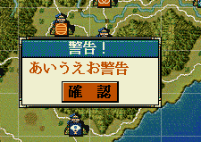

確認ボタンのある警告ダイアログを表示するAPIです。
ユーザーに警告を表示する、などの目的で利用することとなるでしょう。

void 警告ダイアログ表示(string ダイアログ文字列)
void カスタム::On_プレイヤ担当ターン《メイン画面》() { 警告ダイアログ表示("あいうえお警告"); }
「情報フレームダイアログ」に関する主な所は以上となります。 詳しくは「ダイアログ情報型.h」を参照してください。